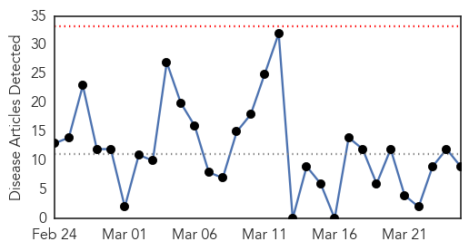
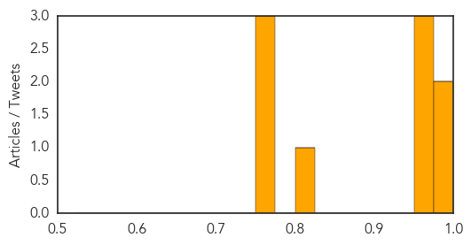

Influenza
30-Day Web Trend
0 alerts, 0 warnings

30-Day Twitter Trend
3 alerts, 0 warnings
Article Locations

Article Confidences
Top Articles:
- 0.997
- The 2015 flu vaccine – what’s new, who should get it and why
- 0.988
- County health official reports uptick in norovirus throughout Oakland County
- 0.974
- Operator issues advice about flu outbreaks in Egypt and India
- 0.966
- Flu Scan for Mar 25, 2015
- 0.962
- WHO update shows ongoing H5N1 activity in Egypt
- 0.801
- Body of Mississippi Mills woman located
- 0.751
- March 24, 2015 Archives
- 0.751
- March 24, 2015 Archives
- 0.751
- March 24, 2015 Archives
Top Tweets:
-
No tweets found for Mar 25, 2015
Yellow Fever
30-Day Web Trend
0 alerts, 0 warnings

30-Day Twitter Trend
0 alerts, 0 warnings

Article Locations

Article Confidences

Top Articles:
-
No articles found for Mar 25, 2015
Top Tweets:
-
No tweets found for Mar 25, 2015